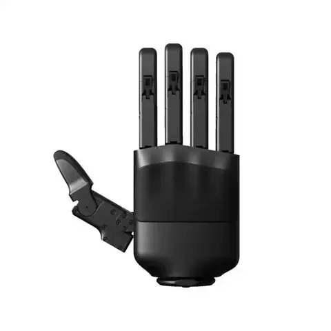
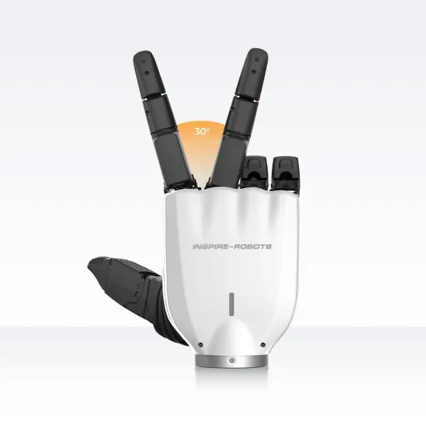
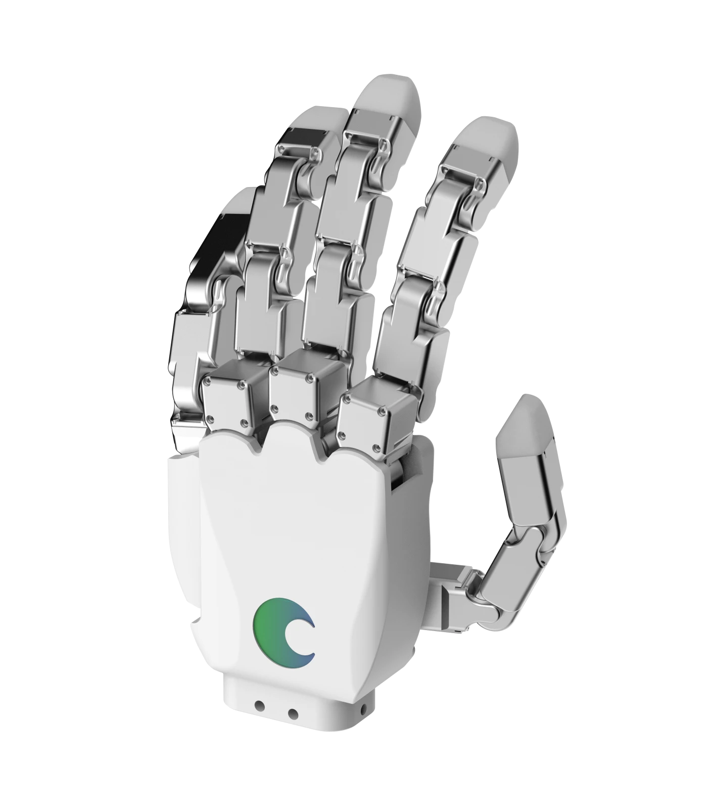
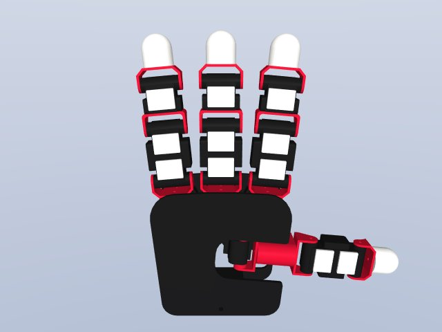
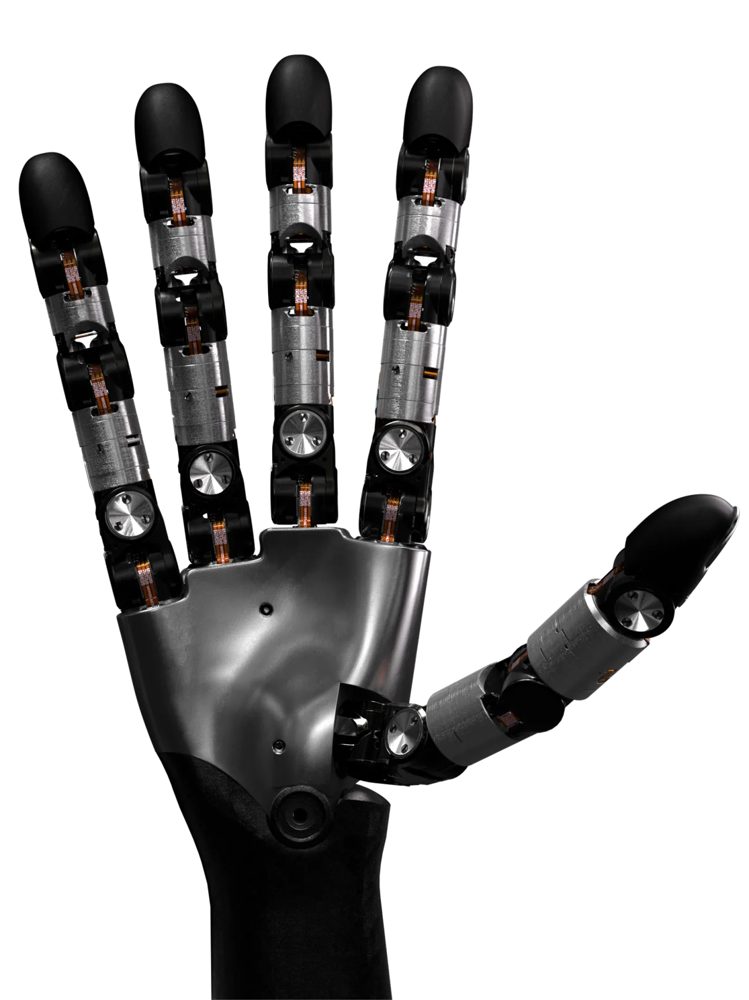
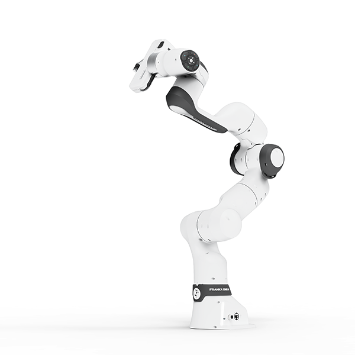
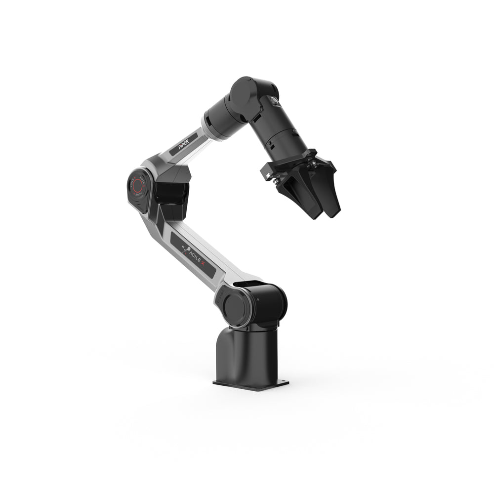
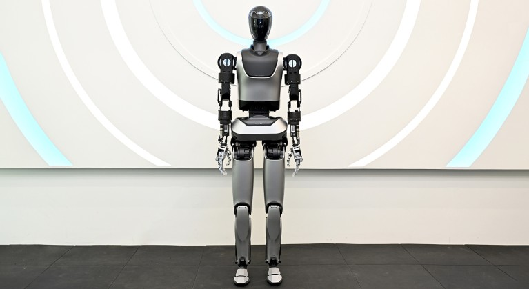

Inspire Robots
RH56DFTP
Robotic hand with tactile sensing.
- Configuration
- Left × 1 · Right × 1
LAB RESOURCES
GPU servers, robotic hands, robot arms and humanoids. Current and planned resources are listed below.
Local GPU servers and access to the KISTI Neuron server.
Lab server
10 GPUs · 1 server node
KISTI Neuron Server
8 GPUs · 1 server node
Desktop server
2 GPUs · 1 desktop server
Desktop server
Planned4 GPUs · 1 desktop server
Lab server
Planned8 GPUs · 1 server node
Left- and right-hand units, including KIST-developed hands with tactile and kinesthetic sensing.

Inspire Robots
Robotic hand with tactile sensing.

Inspire Robots
Multi-finger robotic hand with integrated sensing.

Tesollo
Anthropomorphic robotic hand.

KIST
KIST-developed hand with tactile and kinesthetic sensing.

Wuji Technology
Robotic hand for multi-finger manipulation.
Robot arms and humanoids for manipulation and motion experiments.

Franka Robotics
Robot arm with force sensing.

AgileX Robotics
Robot arms for single-arm and bimanual experiments.

Unitree Robotics
Humanoid robot.

KIST
KIST-developed humanoid robot.